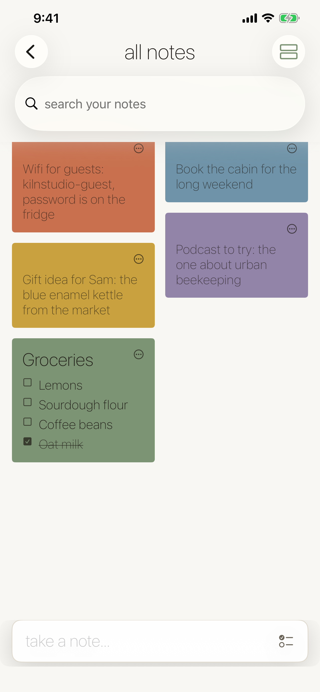
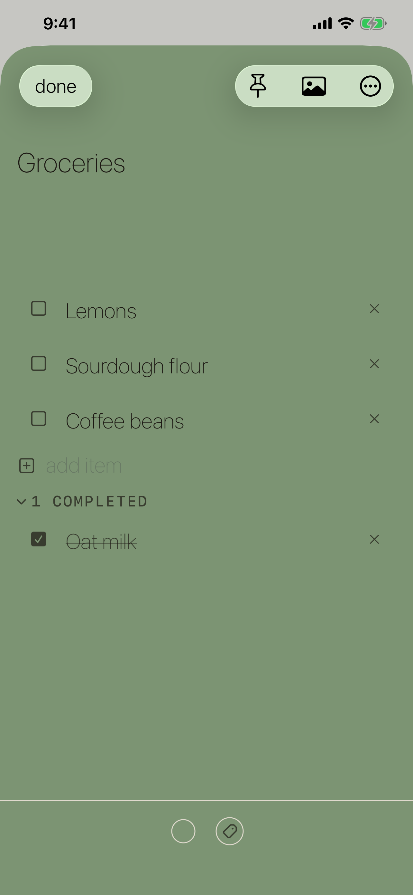
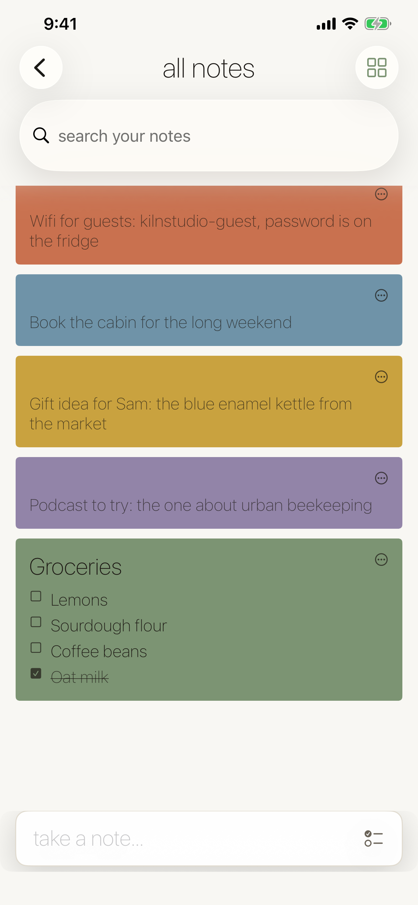
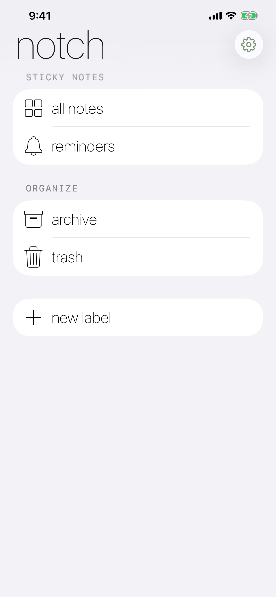
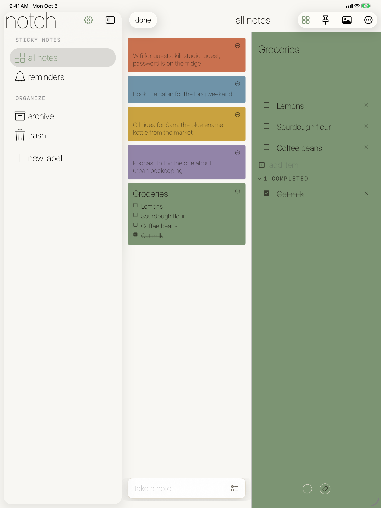

Notch
Quick, colorful notes — pinned up where you'll see them.
Quick, colorful notes — pinned up where you'll see them.
Notch is for the notes that don't need a notebook: the Wi-Fi password, the gift idea, the grocery run. Jot one from the bar at the bottom, give it a color, and it lands on a board of cards. Turn any note into a checklist, label it, set a reminder, or archive it when you're done.
iPhone




iPad

Notes as cards in a two-column board or a single list, in seven soft colors.
Checked items drop into a completed section so the list only shows what's left.
Group notes with labels, get nudged at the right time, and drop in a photo.
Pin what matters, archive what's done, and keep it all in sync through your own iCloud.
Keep Exploring
Back to the productivity apps